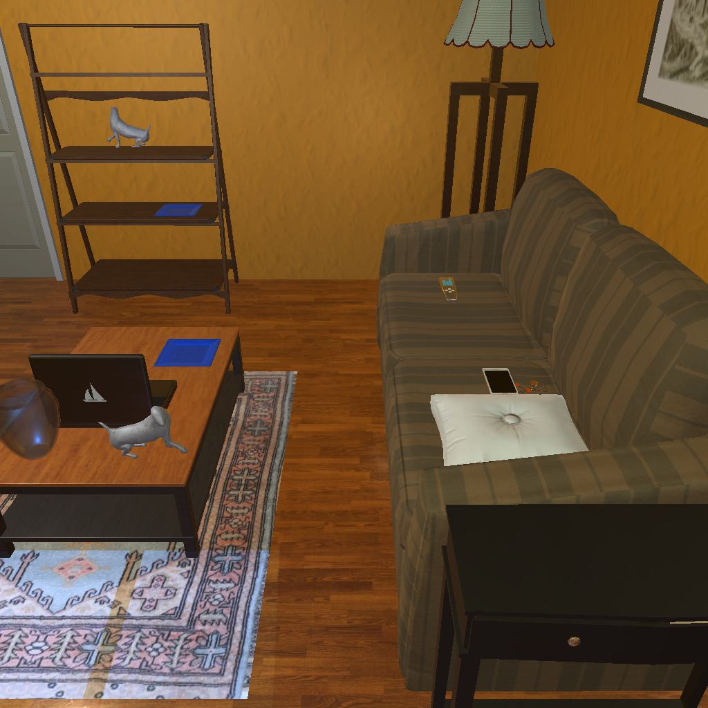

---------------------------------------------------------task: 3---------------------------------------------------------
--------------------------------------------------------------------------------------------------------------------------------------------------------------------
--------------------------------------------------------------------------------------------------------------------------------------------------------------------
Step:--------------------------------------------------------------------------1-------------------------------------------------------------------------------
----------------------------------------
VLM Prompt:
Image1:
**Instruction**
1. Analyze the provided image to identify all visible household objects, focusing on those relevant to the task description "look at plate under the floorlamp."
2. Use the analysis of the image and the task hint "The agent must find an object of the desired type, locate and turn on a light source with the desired object in-hand." to answer the question: what is the most reasonable action in the choices for the task description "look at plate under the floorlamp"?
4. Decide and write the answer using the template: The answer is: (i): , where i is the real number. If there is no desired object in the image, search every place based on **Initial Observation** to find the object. And if no one is exactly correct, choose a similar answer.
**Initial Observation**
You are in the middle of a room. Looking quickly around you, you can see armchair (1), garbagecan (1), tvstand (1), shelf (1-5), sofa (1), coffeetable (1), sidetable (1-2), drawer (1)
**Answer Choices**
(1): go to armchair 1
(2): go to garbagecan 1
(3): go to tvstand 1
(4): go to shelf 1
(5): go to shelf 2
(6): go to sofa 1
(7): go to coffeetable 1
(8): go to sidetable 2
(9): go to drawer 1
(10): go to shelf 3
(11): go to shelf 4
(12): go to shelf 5
(13): take pillow 1 from sidetable 1
(14): take laptop 1 from sidetable 1
(15): take vase 1 from sidetable 1
(16): take statue 1 from sidetable 1
(17): take plate 1 from sidetable 1
(18): take statue 2 from sidetable 1
(19): take cellphone 1 from sidetable 1
(20): take plate 2 from sidetable 1
(21): take remotecontrol 1 from sidetable 1
(22): take keychain 1 from sidetable 1
(23): take newspaper 1 from sidetable 1
(24): use floorlamp 1
(25): examine sidetable 1
**Answer**
Let's think step by step by following the instructions.
----------------------------------------
----------------------------------------
Original Response:
First, we need to identify all visible household objects relevant to the task description "look at plate under the floorlamp." Upon examining the provided image, we can see a floorlamp next to the sofa on the right side of the image. There is no visible plate under the floorlamp in the image. Therefore, the agent must search for a plate based on the Initial Observation.
The task hint suggests that the agent must find a plate, locate and turn on a light source with the desired object in-hand. The most reasonable action to accomplish this task is to first find a plate. None of the answer choices directly indicate the action of taking a plate from a specific location. However, option (17) mentions taking plate 1 from sidetable 1, which is similar to the desired action, even though sidetable 1 is not visible in the image. Since there are no other options that involve taking a plate and option (17) is the closest to the desired action, we will select it.
The answer is: (17): take plate 1 from sidetable 1.
----------------------------------------
----------------------------------------
>>> Refine Original VLM Response and Get Pure Action: take plate 1 from sidetable 1
----------------------------------------
-----------------------------------------------------------------
Running time: 10.677421808242798 seconds
Total Money: 0.6334799999999998
-----------------------------------------------------------------
-----------------------------------------------------------------
Text Observation:You pick up the plate 1 from the sidetable 1.
-----------------------------------------------------------------
UNSUCCEED